Seven fiscal years of police records, July 2019 through June 2026
Author
Ira Sharenow
Published
September 23, 2026
Executive summary
This report analyzes 146,818 El Cerrito Police Department call records from July 1, 2019 through June 30, 2026, covering seven full fiscal years, FY 2019-20 through FY 2025-26. It looks at what officers spend their time on, how crime reports and parking enforcement have changed, where activity is concentrated, how quickly police respond, and how activity varies by season, day, and hour, with particular attention to the most recent year. All figures describe calls and reports logged by the department. They are not the same as confirmed crimes, and a change in a count can reflect a change in reporting or recording as well as a change in events.
Reports in every crime category reached their lowest level of the seven fiscal years studied. Reports of crimes against persons fell from 597 in FY 2019-20 to 418 in FY 2025-26, and property crime reports fell by more than half, from 2,016 to 976. Robbery and carjacking reports dropped from 48 to 15 in a single year. Shooting and gun-related calls declined from 115 to 52 over the period.
Parking tickets more than tripled between FY 2019-20 and FY 2024-25, from 702 to 2,317, then fell 17% to 1,931 in FY 2025-26. About 40% of the decline came on San Pablo Avenue. Enforcement has also shifted toward weekday business hours: in FY 2019-20 about a quarter of tickets were written on weekends, and in FY 2025-26 fewer than one in twelve were. Tickets within 1,000 feet of El Cerrito Plaza BART reached their highest count of the seven years even as the citywide total fell.
Police activity on the Ohlone Greenway was 48% higher in FY 2025-26 than its average over the six earlier fiscal years, driven by pedestrian stops and foot patrol. Officer-initiated activity on the greenway had fallen sharply in January 2020, before the COVID-19 shutdown, and stayed low for five years before rising in FY 2025-26.
The mix of police work changed. Traffic stops grew from 12% of all logged activity in FY 2019-20 through FY 2024-25 to 26% in FY 2025-26, while security checks fell from 17% to 5%. Changes near individual landmarks, including a large increase near Del Norte BART, came mainly from officer-initiated activity such as traffic stops and parking enforcement rather than from calls reporting crimes.
Median response time for call-and-respond incidents held at 7 to 9 minutes from FY 2019-20 through FY 2024-25 and was 6 minutes in FY 2025-26. Part of that improvement reflects a change in the mix of calls, so one year is not enough to call it a trend.
Measure
FY 2019-20
FY 2024-25
FY 2025-26
Crimes against persons (reports)
597
502
418
Property crime (reports)
2,016
1,164
976
Robbery and carjacking
74
48
15
Parking tickets
702
2,317
1,931
Parking tickets on weekends
27.4%
18.6%
7.8%
Median response, call-and-respond incidents (minutes)
8
7
6
About the data
The El Cerrito Police Department logs every call for service and every officer-initiated activity in its records system. Each record includes an event number, a call type (such as “211 - ROBBERY” or “1195 - TRAFFIC STOP”), the time the call was received, the time the first unit arrived, the time the call was cleared, and a location.
Two sources are combined here. Records through June 2025 came from 13 half-year PDF reports, which were extracted to spreadsheets, checked, and corrected. Records for FY 2025-26 came directly from the department as an Excel export, which removed the extraction step entirely.
The analysis uses the city’s fiscal year, July 1 through June 30, so that each year compared is a complete twelve months. The period covers seven full fiscal years, FY 2019-20 through FY 2025-26, for a combined 146,818 records. Throughout the report, “the six earlier years” means FY 2019-20 through FY 2024-25, and comparisons with the most recent year use their average.
Fiscal year
Records
FY 2019-20
23,015
FY 2020-21
17,964
FY 2021-22
16,489
FY 2022-23
18,011
FY 2023-24
23,167
FY 2024-25
25,054
FY 2025-26
23,118
A call record shows that something was reported or that an officer took an action. It does not show whether a crime occurred, whether anyone was charged, or when an incident actually happened. A theft discovered in the morning is logged in the morning, even if it happened overnight. For these reasons the report refers to “reports of” and “calls about” rather than to crime rates.
How police time is spent
To make the data meaningful for residents, each of the 144 call types in the records was assigned to one of seven categories. The assignments are the analyst’s, based on the call-type names, and are not department classifications. The full mapping is published with the code.
Category
Examples
Crimes against persons
Assault, robbery, sexual assault, shootings, threats, domestic violence
Property crime
Burglary, car break-ins, petty and grand theft, vehicle theft, vandalism, fraud
Dangerous driving
Hit and run, drunk driving, reckless driving, speeding, sideshows
Disorder
Disturbances, unwanted persons, trespassing, drugs and alcohol, noise
Parking
Parking violations
Officer-initiated
Traffic, pedestrian, and bike stops; security checks; patrol; warrants
Everything else
Alarms, collisions, welfare and medical calls, suspicious activity, administrative calls
Category
FY 19-20
FY 20-21
FY 21-22
FY 22-23
FY 23-24
FY 24-25
FY 25-26
Crimes against persons
597
431
504
499
560
502
418
Property crime
2,016
1,469
1,540
1,271
1,307
1,164
976
Dangerous driving
309
297
299
266
305
288
245
Disorder
2,352
1,998
1,901
2,074
1,878
1,842
1,667
Parking
702
610
863
1,054
1,519
2,317
1,931
Officer-initiated
9,190
6,302
4,241
5,221
7,530
8,762
8,289
Everything else
7,849
6,857
7,141
7,626
10,068
10,179
9,592
Officer-initiated activity fell by more than half between FY 2019-20 and FY 2021-22 and has since recovered to near its earlier level. The mix within it has changed. In the six earlier years, security checks were 17% of all records and traffic stops 12%. In FY 2025-26, traffic stops were 26% of all records and security checks 5%. Call transfers went from 3% to 9%. The records show what was logged; they do not explain why the mix changed.
Show code
police_geo_all %>%count(call_for_service, sort =TRUE) %>%mutate(`% of all records`=round(100* n /sum(n), 1)) %>%slice_head(n =10) %>%transmute(`Call type`=str_to_title(call_for_service), Records = n, `% of all records`)
Table 1: Ten most common call types, FY 2019-20 through FY 2025-26.
Call type
Records
% of all records
1059 - Security Check
21908
14.9
1195 - Traffic Stop
21317
14.5
Parker - Parking Violation
8996
6.1
911dis - 911 Disconnect
8758
6.0
Unwant - Unwanted Person
6455
4.4
Xfer - Call Transfer
6001
4.1
1033a - Alarm Audible
5881
4.0
Follow - Follow Up
4769
3.2
1154 - Suspicious Vehicle
4528
3.1
415 - Disturbance
4309
2.9
Crime reports
Show code
police_all %>%filter(category %in%c("Crimes against persons", "Property crime","Dangerous driving", "Disorder")) %>%count(category, fy_label) %>%ggplot(aes(fy_label, n, group =1)) +geom_line(color ="steelblue", linewidth =1) +geom_point(color ="steelblue", size =2) +facet_wrap(~ category, scales ="free_y") +expand_limits(y =0) +scale_y_continuous(labels = comma) +labs(title ="Crime reports by category", x =NULL, y ="Reports") + theme_report +theme(axis.text.x =element_text(angle =45, hjust =1))
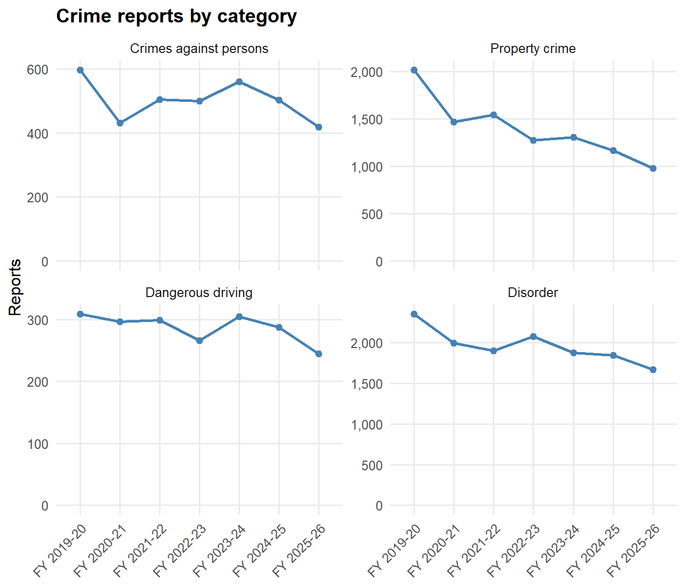
Figure 1: Reports by crime category, FY 2019-20 through FY 2025-26. Each panel has its own scale.
All four crime categories were at their lowest level of the seven years in FY 2025-26.
Crimes against persons
Type
FY 19-20
FY 20-21
FY 21-22
FY 22-23
FY 23-24
FY 24-25
FY 25-26
Assault
235
162
195
201
201
176
171
Robbery and carjacking
74
65
47
74
81
48
15
Shootings and guns
115
99
86
88
85
61
52
Threats and stalking
43
33
39
43
61
90
58
Domestic violence
39
24
42
39
42
43
32
Crimes against children and elders
32
26
32
20
38
40
37
Sexual assault
14
5
10
8
13
21
18
Robbery and carjacking reports fell from 48 in FY 2024-25 to 15 in FY 2025-26, the largest one-year change in any category. Because a drop that size could signal a recording change, it was checked directly. The 15 robberies are spread across nine of the twelve months rather than missing from a block of time, and no robbery call type was renamed or moved. Robbery alarms, which are business alarm activations rather than confirmed robberies, are counted separately and numbered 20. The decline appears in the data as recorded; with counts this small, part of a one-year change can be chance.
Shooting and gun-related calls, which include shots-fired reports, brandishing, and person-with-a-gun calls, declined in five of the six year-to-year changes. Assault reports have been roughly level for two years. Threats and stalking reports rose to 90 in FY 2024-25 before falling to 58. Sexual assault reports were somewhat higher in the last two years than earlier, though the numbers are small enough that year-to-year variation is expected.
Property crime
Type
FY 19-20
FY 20-21
FY 21-22
FY 22-23
FY 23-24
FY 24-25
FY 25-26
Petty theft
676
554
529
439
452
436
304
Car break-in
416
152
135
126
144
70
107
Vandalism and arson
244
197
190
146
162
145
132
Burglary (home, business)
189
102
118
108
99
111
66
Vehicle theft
189
187
256
221
242
141
127
Fraud and identity theft
154
118
128
87
120
146
148
Grand theft
108
103
150
119
69
107
74
Petty theft and grand theft are shown separately because they describe very different events. Petty theft reports fell by more than half over the period. Burglary reports fell by about two-thirds. Car break-in reports dropped sharply after FY 2019-20, reached a low of 70 in FY 2024-25, and rose to 107 in FY 2025-26. Fraud and identity theft is the one property category that has not declined.
Dangerous driving and disorder
Dangerous driving reports, which include hit and run, drunk driving, reckless driving, and sideshows, ranged from 266 to 309 a year before falling to 245 in FY 2025-26. Disorder reports, led by disturbances and unwanted-person calls, declined from 2,352 to 1,667 over the period.
Parking enforcement
Parking tickets are the single subject residents are most likely to have direct experience with, so they are treated separately from crime throughout this report.
Show code
parking_fy %>%ggplot(aes(fy_label, parking_violations)) +geom_col(fill ="steelblue") +geom_text(aes(label =comma(parking_violations)), vjust =-0.4, size =3.5) +scale_y_continuous(labels = comma, expand =expansion(mult =c(0, 0.08))) +labs(title ="Parking tickets by fiscal year", x =NULL, y ="Tickets") + theme_report
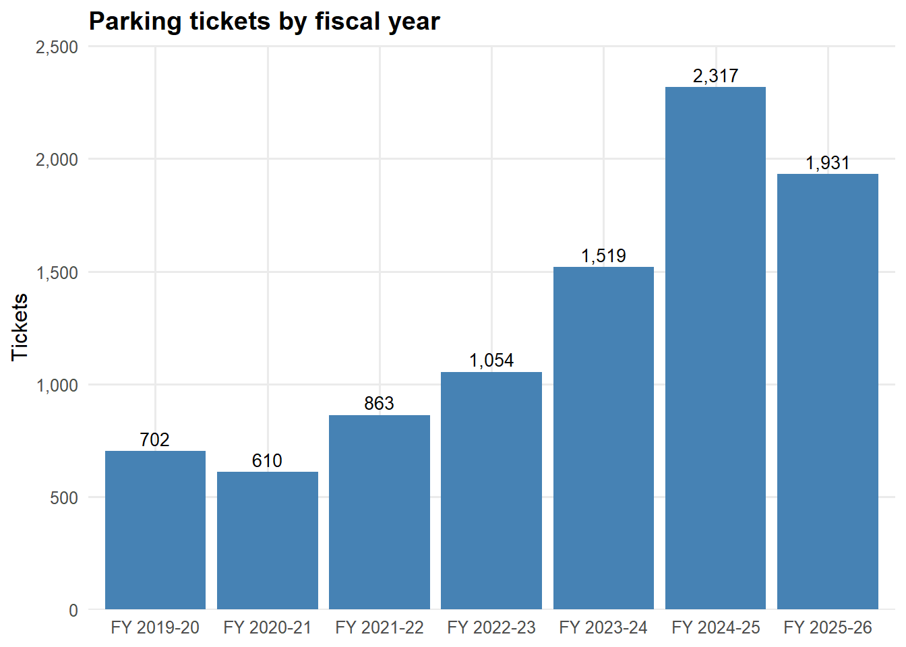
Figure 2: Parking tickets by fiscal year.
Tickets more than tripled from FY 2019-20 to FY 2024-25, with the largest increases in FY 2023-24 and FY 2024-25. FY 2025-26 was the first decline after four consecutive increases, and the total was still about 2.75 times the FY 2019-20 level.
The decline was uneven across the year. The largest monthly drops compared with FY 2024-25 came in May (379 to 164), September (233 to 138), April (217 to 129), and January (169 to 89). July and June were higher than the year before. The pattern suggests enforcement that varies in intensity from month to month rather than a steady reduction.
Table 2: Parking tickets by month, FY 2024-25 and FY 2025-26.
Month
FY 2024-25
FY 2025-26
Change
Jul
171
271
100
Aug
183
177
-6
Sep
233
138
-95
Oct
208
164
-44
Nov
133
103
-30
Dec
114
83
-31
Jan
169
89
-80
Feb
118
119
1
Mar
118
141
23
Apr
217
129
-88
May
379
164
-215
Jun
274
353
79
Where tickets are written
Street
FY 19-20
FY 20-21
FY 21-22
FY 22-23
FY 23-24
FY 24-25
FY 25-26
San Pablo Ave
84
72
47
118
209
337
180
Liberty St
43
42
90
45
89
129
136
Kearney St
19
10
37
28
58
72
78
Lexington Ave
16
25
71
31
51
59
74
Elm St
17
14
39
29
32
32
45
Ashbury Ave
7
3
8
20
34
46
42
Stockton Ave
5
1
2
8
13
9
30
San Pablo Avenue accounted for 157 of the 386-ticket decline in FY 2025-26. Tickets on several residential streets, including Liberty, Kearney, Lexington, Elm, and Stockton, rose. Enforcement is not concentrated on a handful of streets: in every year, the five busiest streets accounted for between 24% and 33% of tickets.
Compared with FY 2024-25, tickets within 500 feet of Del Norte BART rose from 32 to 80 and those near the library rose from 27 to 52, while tickets near the Community Center fell from 38 to 16 and near Harding Elementary from 38 to 13.
Fiscal year
Tickets within 1,000 ft of El Cerrito Plaza BART
Share of mappable tickets
FY 2019-20
60
8.5%
FY 2020-21
49
8.1%
FY 2021-22
101
11.7%
FY 2022-23
60
5.7%
FY 2023-24
111
7.3%
FY 2024-25
183
7.9%
FY 2025-26
196
10.3%
Through FY 2024-25, tickets near El Cerrito Plaza grew no faster than tickets citywide. In FY 2025-26, however, the number of tickets near the Plaza reached its highest level of the seven years while the citywide total fell, and the Plaza’s share rose to its second-highest level.
Figure 3: Where parking tickets were written, FY 2024-25 and FY 2025-26.
When tickets are written
Show code
ggplot(parking_schedule, aes(fy_label, share, fill = slot)) +geom_col(width =0.75) +geom_text(aes(label =if_else(share >=0.04, percent(share, accuracy =1), "")),position =position_stack(vjust =0.5), size =3.3, color ="white",fontface ="bold") +scale_fill_manual(values =c("Weekend"="#E69F00","Weekday, other hours"="#56B4E9","Weekday, 7 a.m. to 4 p.m."="#0072B2")) +scale_y_continuous(labels = percent, expand =c(0, 0)) +labs(title ="When parking tickets are written",x =NULL, y ="Share of the year's tickets", fill =NULL) + theme_report +theme(axis.text.x =element_text(angle =45, hjust =1), legend.position ="top")
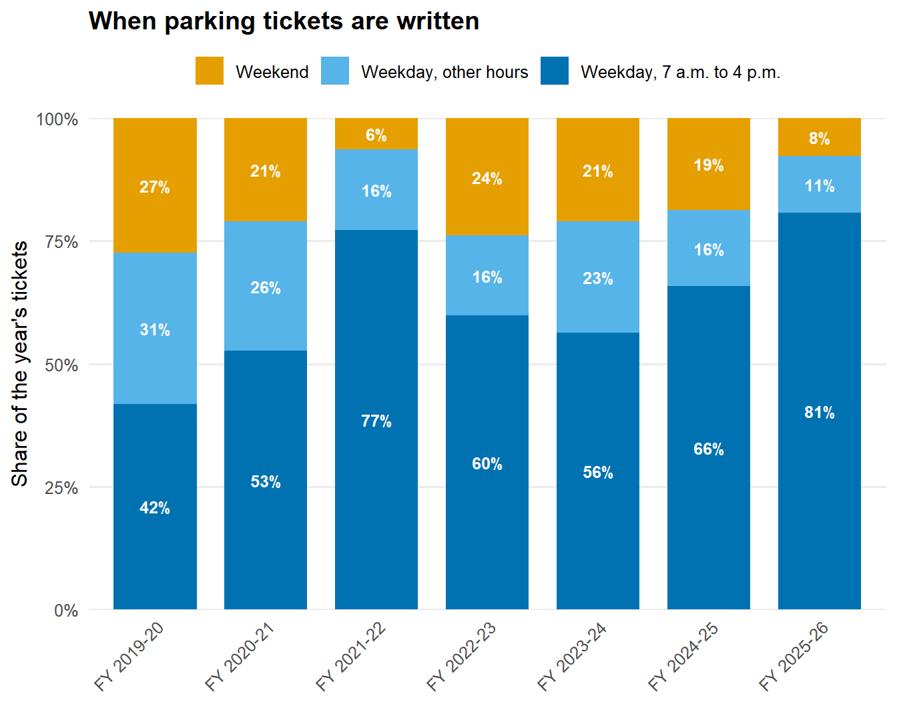
Figure 4: Parking tickets by time of week, each fiscal year. Each bar adds to 100%.
In FY 2019-20, 42% of parking tickets were written on weekdays between 7 a.m. and 4 p.m., 31% on weekdays at other hours, and 27% on weekends. In FY 2025-26, the weekday 7 a.m. to 4 p.m. share was 81%, with 11% at other weekday hours and 8% on weekends.
Show code
parking_points %>%filter(fy %in%c(2020, 2026)) %>%mutate(weekday =wday(dt, label =TRUE, week_start =1)) %>%count(fy_label, weekday) %>%group_by(fy_label) %>%mutate(share = n /sum(n)) %>%ungroup() %>%ggplot(aes(weekday, share, fill = fy_label)) +geom_col(position =position_dodge(width =0.8), width =0.75) +geom_text(aes(label =percent(share, accuracy =1)),position =position_dodge(width =0.8), vjust =-0.4, size =3) +scale_fill_manual(values =c("FY 2019-20"="#E69F00", "FY 2025-26"="#0072B2")) +scale_y_continuous(labels = percent, expand =expansion(mult =c(0, 0.1))) +labs(title ="Parking tickets by day of the week",x =NULL, y ="Share of the year's tickets", fill =NULL) + theme_report +theme(legend.position ="top")
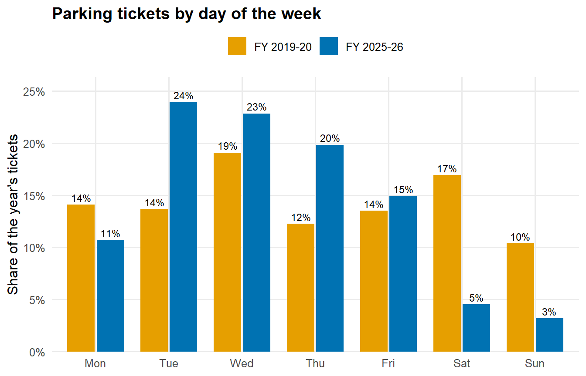
Figure 5: Share of parking tickets written on each day of the week, FY 2019-20 and FY 2025-26.
The weekly schedule has also varied from year to year; in FY 2022-23, for example, 31% of tickets were written on Fridays. The chart below shows the full pattern for the two most recent years, by day and hour.
Show code
parking_points %>%filter(fy %in%c(2025, 2026)) %>%mutate(weekday =wday(dt, label =TRUE, week_start =1),hour =hour(dt)) %>%count(fy_label, weekday, hour) %>%complete(fy_label, weekday, hour =0:23, fill =list(n =0)) %>%group_by(fy_label) %>%mutate(share = n /sum(n)) %>%ungroup() %>%ggplot(aes(hour, fct_rev(weekday), fill = share)) +geom_tile(color ="white", linewidth =0.3) +facet_wrap(~ fy_label, ncol =1) +scale_fill_viridis_c(option ="plasma", labels = percent) +scale_x_continuous(breaks =seq(0, 21, 3),labels =c("Midnight", "3 a.m.", "6 a.m.", "9 a.m.","Noon", "3 p.m.", "6 p.m.", "9 p.m.")) +labs(title ="When parking tickets are written", x =NULL, y =NULL,fill ="Share of year") + theme_report
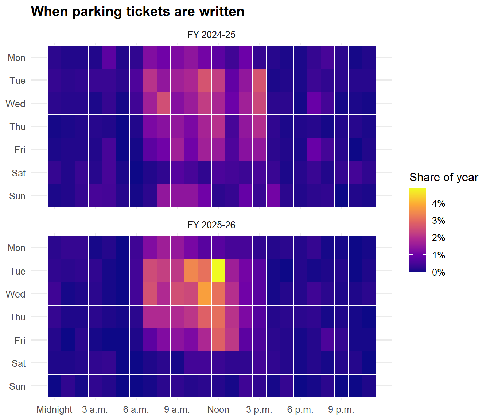
Figure 6: Share of each year’s parking tickets by weekday and hour, FY 2024-25 and FY 2025-26.
The Ohlone Greenway
The Ohlone Greenway is a linear trail that runs the length of El Cerrito alongside the BART tracks. Because it is a line rather than a point, greenway activity was measured from the location text rather than from map coordinates. This matters for accuracy: 99 FY 2025-26 records are logged simply as “OHLONE GREENWAY,” with no cross street, and could not be placed on a map.
The department’s name for the location changed during the period. Through June 2025 it was most often recorded as “BART PATH”; in FY 2025-26 it is almost always “OHLONE.” Counting both names is essential. A count using only “OHLONE” would suggest that greenway activity more than doubled, when the actual increase was 25%.
Records were sorted into two groups: activity on the greenway itself, where the location names the greenway, and activity at addresses next to it, where the greenway is noted as the nearest cross street. On the greenway, FY 2025-26 had 344 records compared with an average of 232 a year over the six earlier years. Next to the greenway, FY 2025-26 had 45 records compared with an average of 47.
Show code
police_all %>%filter(!is.na(address)) %>%mutate(greenway =greenway_bucket(address)) %>%filter(greenway =="on greenway") %>%mutate(type =if_else(call_for_service %in% officer_initiated_types,"Officer-initiated", "Other calls")) %>%count(fy_label, type) %>%ggplot(aes(fy_label, n, fill = type)) +geom_col() +scale_fill_manual(values =c("Officer-initiated"="steelblue", "Other calls"="grey65")) +labs(title ="Activity on the Ohlone Greenway", x =NULL, y ="Records", fill =NULL) + theme_report +theme(axis.text.x =element_text(angle =45, hjust =1), legend.position ="top")
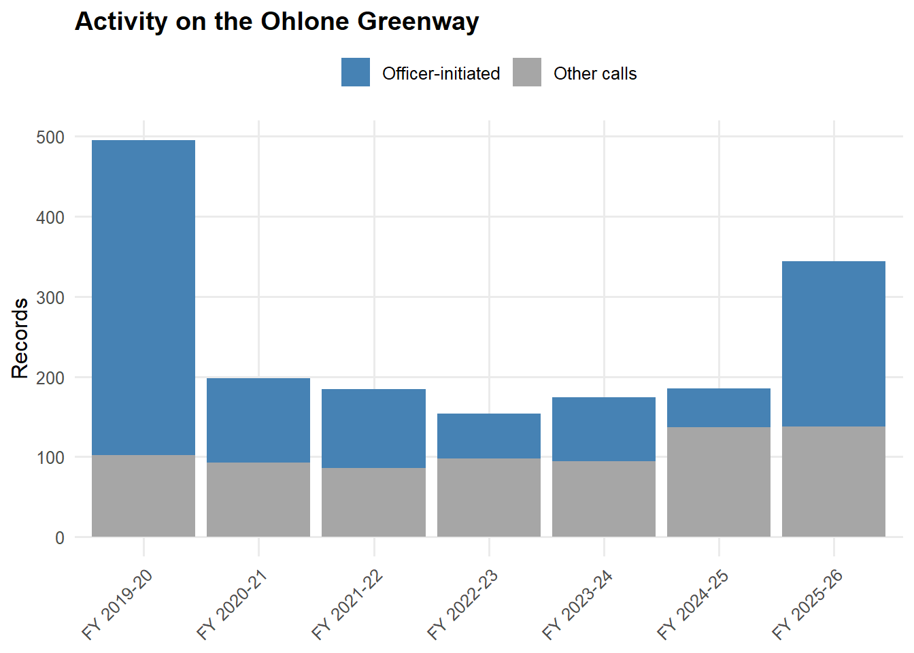
Figure 7: Police activity on the Ohlone Greenway by fiscal year.
Fiscal year
Officer-initiated
Other calls
Total
FY 2019-20
393
102
495
FY 2020-21
105
93
198
FY 2021-22
98
86
184
FY 2022-23
56
98
154
FY 2023-24
80
94
174
FY 2024-25
48
137
185
FY 2025-26
206
138
344
For this section, officer-initiated activity means security checks, pedestrian, traffic, and bike stops, foot patrol, and parking enforcement. That activity was highest in FY 2019-20, fell sharply, stayed low for five years, and rose about fourfold in FY 2025-26 to roughly half its FY 2019-20 level. The type of activity also changed, as the table below shows: security checks on the greenway fell, while pedestrian stops and foot patrol rose. Other calls on the greenway have been about 137 a year for the past two years, up from roughly 90 in earlier years.
Table 3: Most common call types on the greenway: average of the six earlier years vs. FY 2025-26.
Call type
Six earlier years, per year
FY 2025-26
1059 - Security Check
90.7
66
1194 - Pedestrian Stop
19.0
65
Footp - Foot Patrol - Miscellaneous
3.2
30
1195 - Traffic Stop
10.8
20
Pmisc - Police Miscellaneous
7.3
16
Xfer - Call Transfer
3.7
16
Parker - Parking Violation
3.8
14
1195b - Bike Stop
2.5
11
911dis - 911 Disconnect
4.5
10
415 - Disturbance
6.7
9
Welfck - Welfare Check
5.5
9
Unwant - Unwanted Person
3.7
7
The early-2020 decline
Officer-initiated activity on the greenway declined in 2020, which coincided with the start of the COVID-19 pandemic. Monthly records show that the decline began earlier. Security checks on the greenway averaged about 40 a month from July through December 2019, fell to 11 and 13 in January and February 2020, and stayed between 2 and 14 a month through 2021.
Figure 8: Greenway share of all security checks, by month, July 2019 through December 2021. Dashed line: March 2020.
The decline was specific to the greenway. Citywide security checks did not fall in early 2020, and in March 2020 they rose to 1,269, about three times their usual monthly level. The greenway’s share of all security checks dropped from about 13% in July through December 2019 to between 1% and 5% from January 2020 onward. The data show when the change happened but not why.
Figure 9: Density of crime-related incidents, FY 2019-20 through FY 2025-26, relative to nine community landmarks.
Crime-related incidents concentrate along the San Pablo Avenue corridor, El Cerrito’s main commercial spine, and drop off sharply moving east into the hillside residential neighborhoods. This map and the landmark tables below use the crime-related call types described in the technical appendix, which include parking violations; the maps in the parking section show tickets on their own.
Show code
compute_landmark_counts(landmark_input_all, "Records within 500 ft") %>%arrange(desc(`Records within 500 ft`)) %>%rename(Landmark = landmark)
Table 4: All police activity within 500 feet of each landmark, FY 2019-20 through FY 2025-26.
Landmark
Records within 500 ft
EC Plaza BART
2496
EC Community Center
1991
ECHS
1301
Del Norte BART
1235
Library
1157
Harding
870
Madera
543
Castro Park
397
Korematsu
326
The table counts all police activity, not only crime, within 500 feet of nine community landmarks. Del Norte BART sits on the city’s border with Richmond and has its own BART Police substation. Incidents handled by BART Police or by Richmond police are not part of this dataset, so the count reflects El Cerrito Police Department activity only.
Table 5: Crime-related incidents within 500 feet of each landmark by type, FY 2019-20 through FY 2025-26.
Landmark
Vehicle crime
Dangerous driving
All other
Total
EC Plaza BART
28
17
399
444
EC Community Center
28
17
364
409
ECHS
9
11
334
354
Library
25
2
327
354
Del Norte BART
12
13
318
343
Harding
9
8
200
217
Castro Park
4
4
84
92
Korematsu
3
2
64
69
Madera
4
2
56
62
Vehicle crime (car break-ins, vehicle theft, carjacking) and dangerous driving (hit and run, drunk driving) are shown separately because they are different kinds of risk: property crime against a parked car, and danger from a car in motion. “All other” covers every other crime-related type, such as assault, robbery, burglary, theft, and vandalism.
Figure 10: Density of vehicle-crime incidents, FY 2019-20 through FY 2025-26.
Changes in the most recent year
Activity within 500 feet of nine landmarks in FY 2025-26 was compared with the average of the six earlier years. To keep the periods comparable, call types whose locations were withheld in the PDF records, such as mental health and juvenile calls, are excluded from both.
Show code
landmark_base %>%left_join(landmark_latest, by ="landmark") %>%arrange(desc(latest)) %>%transmute(Landmark = landmark, `Six earlier years, per year`= base_per_year,`FY 2025-26`= latest)
Table 6: All police activity within 500 feet of each landmark: average of the six earlier years vs. FY 2025-26.
Landmark
Six earlier years, per year
FY 2025-26
Del Norte BART
146
359
EC Plaza BART
359
343
Library
152
248
EC Community Center
291
247
ECHS
188
176
Harding
118
161
Castro Park
57
54
Madera
82
48
Korematsu
47
44
The table below shows which call types changed most near Del Norte BART, the library, and Madera. In each case, the largest changes were in officer-initiated and administrative activity, such as traffic stops, parking tickets, security checks, and call transfers, rather than in crime reports.
Show code
bind_rows(landmark_calls("Del Norte BART") %>%mutate(Landmark ="Del Norte BART"),landmark_calls("Library") %>%mutate(Landmark ="Library"),landmark_calls("Madera") %>%mutate(Landmark ="Madera")) %>%transmute(Landmark, `Call type`=str_to_title(call_for_service),`Six earlier years, per year`= base, `FY 2025-26`= latest,Change =round(change, 1))
Table 7: Largest changes by call type within 500 feet: average of the six earlier years vs. FY 2025-26.
Landmark
Call type
Six earlier years, per year
FY 2025-26
Change
Del Norte BART
1195 - Traffic Stop
22.7
98
75.3
Del Norte BART
Parker - Parking Violation
10.8
80
69.2
Del Norte BART
Xfer - Call Transfer
21.0
77
56.0
Del Norte BART
911dis - 911 Disconnect
13.7
26
12.3
Del Norte BART
1194 - Pedestrian Stop
3.0
10
7.0
Del Norte BART
Oaided - Outside Assist
11.2
7
-4.2
Library
Parker - Parking Violation
15.8
52
36.2
Library
1059 - Security Check
21.3
43
21.7
Library
1195 - Traffic Stop
8.0
28
20.0
Library
Xfer - Call Transfer
5.7
19
13.3
Library
1066 - Suspicious Person
6.3
13
6.7
Library
1154 - Suspicious Vehicle
3.7
8
4.3
Madera
1059 - Security Check
44.5
18
-26.5
Madera
1154 - Suspicious Vehicle
2.5
0
-2.5
Madera
Xpat - Extra Patrol
11.8
10
-1.8
Madera
1124 - Abandoned Vehicle
0.3
2
1.7
Madera
1033a - Alarm Audible
3.7
5
1.3
Madera
Footp - Foot Patrol - Miscellaneous
1.2
0
-1.2
Show code
fy26_crime_points <- police_fy26_geocoded %>%filter(!BAD_LATLON_FLAG) %>%mutate(cfs_key =str_to_lower(call_for_service)) %>%left_join(call_categories, by ="cfs_key") %>%filter(category %in%c("Crimes against persons", "Property crime"))ggplot() +annotation_map_tile(type ="osm", zoomin =0) +stat_density_2d(data = fy26_crime_points,aes(x = long, y = lat, fill =after_stat(level)),geom ="polygon", contour =TRUE, alpha =0.5, bins =20) +scale_fill_gradient(low ="yellow", high ="red", breaks = range,labels =c("Fewer reports", "More reports")) +geom_point(data = landmarks_geocoded, aes(x = long, y = lat),color ="black", size =2.5, shape =17) +geom_label_repel(data = landmarks_geocoded, aes(x = long, y = lat, label = landmark),size =2.8, fontface ="bold", label.padding =0.15, label.size =0,fill =alpha("white", 0.75), min.segment.length =0, max.overlaps =Inf) +coord_sf(xlim =c(EC_MAP_LONG_MIN, EC_MAP_LONG_MAX),ylim =c(EC_MAP_LAT_MIN, EC_MAP_LAT_MAX), crs =4326) +labs(title ="Where crimes were reported, FY 2025-26", fill =NULL) + theme_report +theme(axis.title =element_blank())
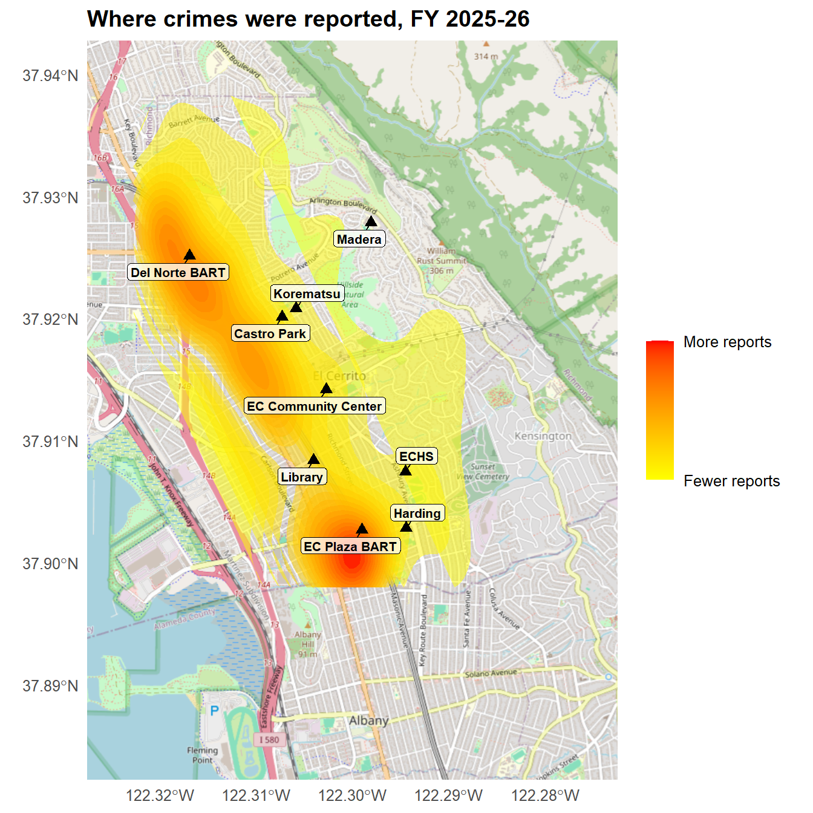
Figure 11: Crimes against persons and property crime reports, FY 2025-26 (parking excluded).
Response times
Response time is measured from when a call is received to when the first officer arrives. The analysis covers crime-related calls and excludes activity that officers initiate themselves, such as parking enforcement, because those records have no travel time and would make responses look faster than they are.
The exclusion matters. Including officer-initiated records, the median drops from 6 minutes in FY 2019-20 to 3 in FY 2025-26, an apparent improvement driven largely by the growth of parking enforcement, which has no dispatch or travel time. The table below uses call-and-respond incidents only.
Fiscal year
Median response (minutes)
FY 2019-20
8
FY 2020-21
8
FY 2021-22
8
FY 2022-23
9
FY 2023-24
8
FY 2024-25
7
FY 2025-26
6
The FY 2025-26 median of 6 minutes was the lowest of the seven years. A comparison of individual call types found that the improvement is partly real and partly a change in the mix of calls. Of 14 common call types, 6 were faster in FY 2025-26 than the year before, 5 were unchanged, and 3 were slower. At the same time, there were fewer of some call types that typically have longer response times, such as theft reports, which lowers the overall median on its own. One year of improvement is not enough to establish a trend.
Table 8: Median response time (minutes) by call type, FY 2024-25 and FY 2025-26, for call-and-respond types with at least 30 cases in each year.
Call type
Median, FY 2024-25
Median, FY 2025-26
Cases, FY 2024-25
Cases, FY 2025-26
Unwant - Unwanted Person
6.0
6.0
769
677
415 - Disturbance
8.0
7.0
504
542
488 - Petty Theft
8.0
7.5
406
284
243a - Assault / Battery
6.0
6.0
115
121
20002 - Hit And Run No Injury
9.0
9.0
128
114
594 - Vandalism
8.0
9.0
116
108
1053 - Person Down
4.0
4.0
134
103
459a - Auto Burglary
9.5
7.0
64
103
10851 - Motor Vehicle Theft
13.0
11.0
109
100
602l - Trespassing
6.0
7.0
88
77
487 - Grand Theft
12.0
8.0
103
72
1179 - Accident W/ Medical Routed
4.0
3.0
70
65
422 - Criminal Threats
13.0
10.0
66
47
459r - Residential Burglary
10.5
14.0
62
41
For the most urgent calls, including shots fired, robbery, and assault with a deadly weapon, median response times in FY 2025-26 were between 2 and 5 minutes, consistent with earlier years. The number of these calls is small, so they are best read as a group rather than type by type.
Seasonal patterns
This section asks whether police activity follows regular patterns by month of the year, day of the week, and hour of the day, and whether those patterns have changed over time. Three series are examined: crimes against persons, property crime, and parking. The methods follow Hyndman and Athanasopoulos, Forecasting: Principles and Practice (3rd edition), using the fpp3 packages in R. The monthly series run from July 2019 through June 2026, 84 months in all. A pattern that is not there is reported as such.
Month of the year
The first step is simply to look at the data over time, because a long-term trend or a sudden shift can be mistaken for a seasonal pattern.
Show code
monthly_ts %>%autoplot(n) +facet_grid(series ~ ., scales ="free_y") +labs(title ="Monthly counts", x =NULL, y ="Per month") + theme_report +theme(legend.position ="none")
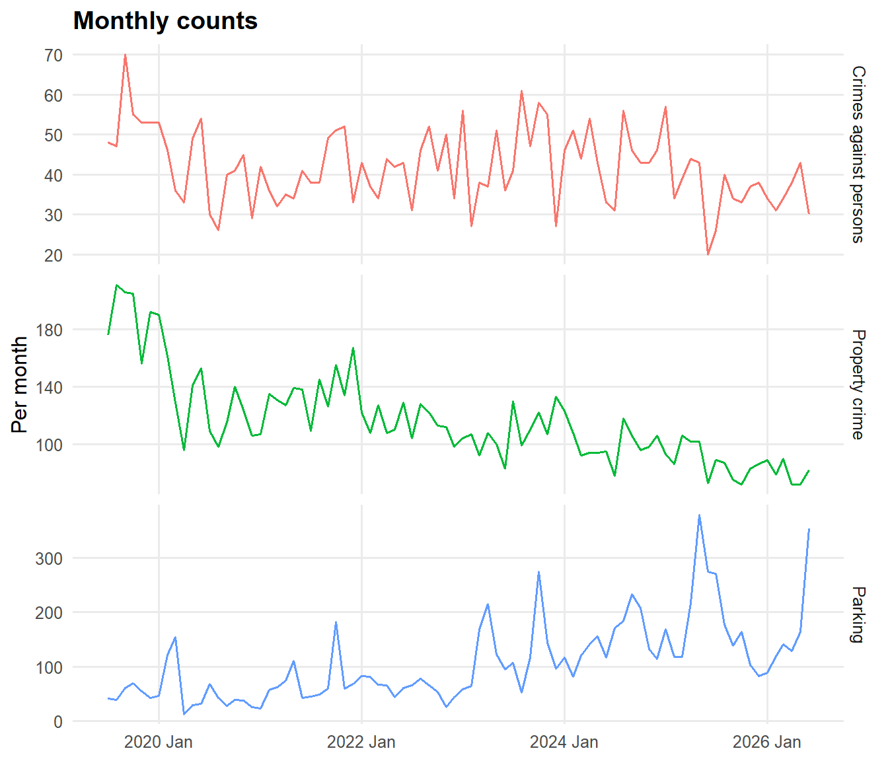
Figure 12: Monthly reports and tickets, July 2019 through June 2026.
Property crime shows a long decline. Parking shows strong growth through 2025 with large month-to-month swings. Crimes against persons is comparatively flat, with considerable month-to-month noise at about 40 reports a month.
Show code
monthly_ts %>%gg_season(n, labels ="right") +labs(title ="Each year's monthly pattern", x =NULL, y ="Per month") + theme_report
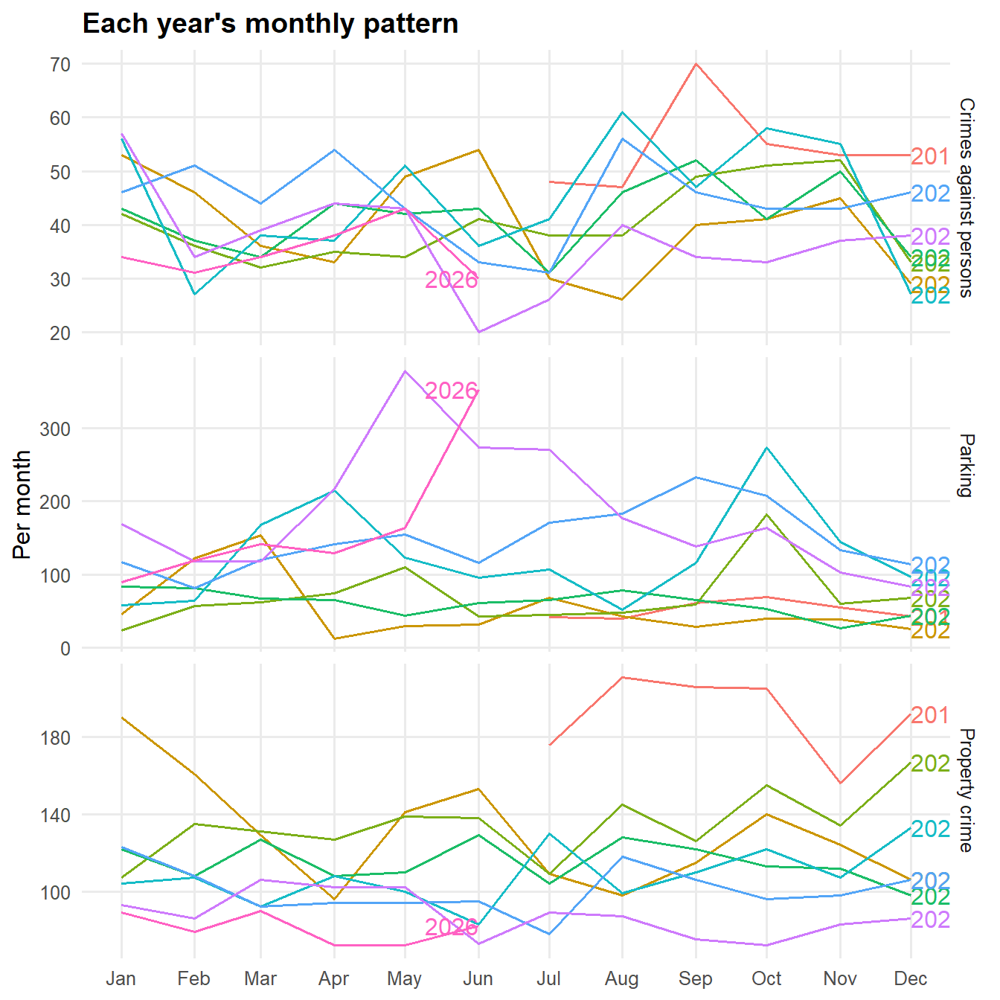
Figure 13: Seasonal plot: each calendar year drawn as its own line across the months.
The seasonal plot overlays the years. If a seasonal pattern existed, the lines would rise and fall together in the same months. For property crime the lines are stacked by year, reflecting the decline, with no consistent shape in common. For parking the years differ so much in both level and shape that no common pattern stands out.
Show code
monthly_ts %>%gg_subseries(n) +labs(title ="Month-by-month comparison across years", x =NULL, y ="Per month") + theme_report
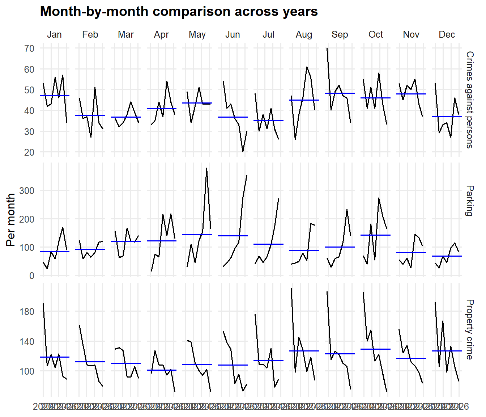
Figure 14: Subseries plot: each calendar month across the years. Blue lines show each month’s average.
The subseries plot groups the same month across all years, which makes it easier to see whether a month is consistently high or low. A month with a high average but widely scattered values, as with October for parking, reflects a few unusual years rather than a reliable pattern.
Show code
monthly_stl %>%autoplot() +labs(title ="Trend, seasonal, and remainder components") + theme_report
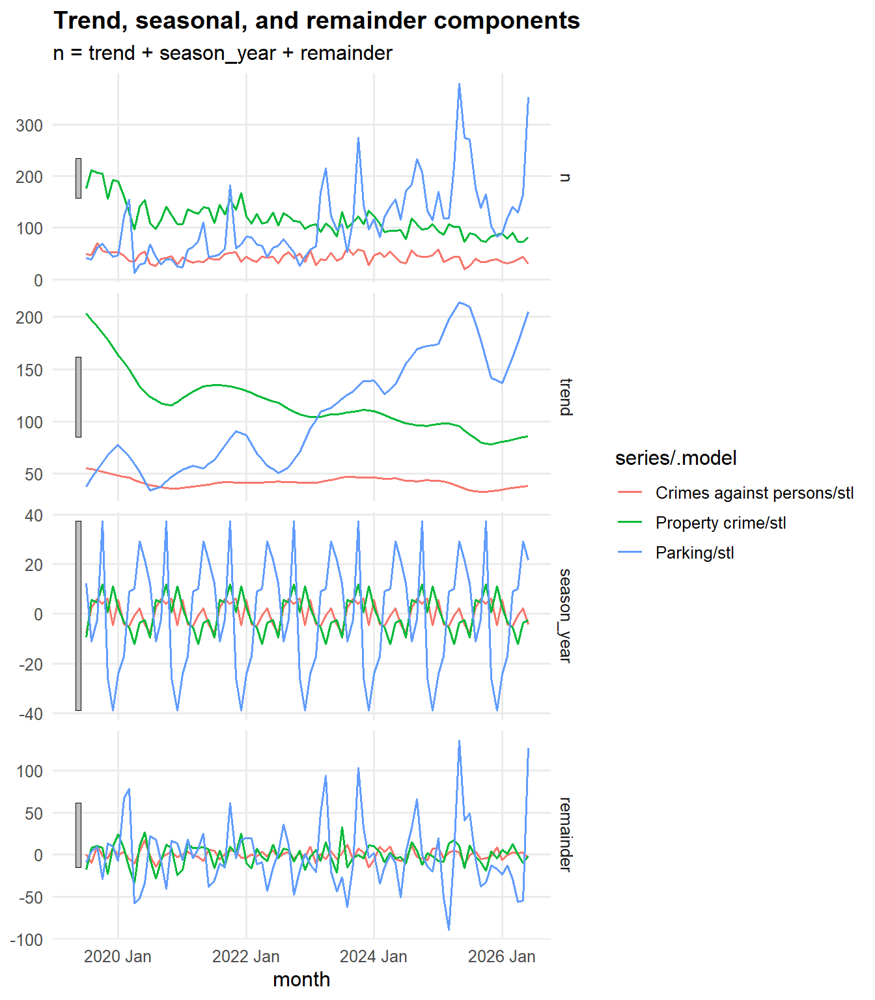
Figure 15: STL decomposition: each series separated into trend, seasonal, and remainder components.
STL decomposition separates each series into a smooth trend, a repeating yearly pattern, and what is left over. The scale bars on the left of each panel show relative size: when the seasonal component’s range is small compared with the trend and the remainder, seasonality plays a minor role.
Figure 16: Autocorrelation of monthly counts. A seasonal pattern appears as a spike at lag 12.
Autocorrelation measures how strongly each month resembles the months before it. A yearly pattern shows up as a spike at lag 12. For parking and property crime, where a strong trend is present, autocorrelation is high at every lag, which reflects the trend rather than seasonality; the STL results above are the better guide for those two series.
Table 9: Seasonal and trend strength (0 = none, 1 = the series is entirely that component), with peak and low months from the STL seasonal component.
Series
Trend strength
Seasonal strength
Peak month
Low month
Crimes against persons
0.43
0.47
November
July
Property crime
0.82
0.25
October
April
Parking
0.58
0.32
October
December
Seasonal effects are modest compared with the trends. For property crime, the largest seasonal effect is about 11% of an average month, with a peak in October and a low in April; the long decline matters far more than the season. For crimes against persons, the largest seasonal effect is about 19% of an average month, with a peak in November and a low in July, but with about 42 reports a month some of that variation is chance. For parking, the peak month (October) is an average over years that differed a great deal, so it should not be read as a reliable annual pattern; the decomposition assumes the same seasonal shape every year, which fits parking poorly.
Day of the week
Show code
daily_ts %>%gg_subseries(n, period ="week") +labs(title ="Daily counts by day of the week", x =NULL, y ="Per day") + theme_report
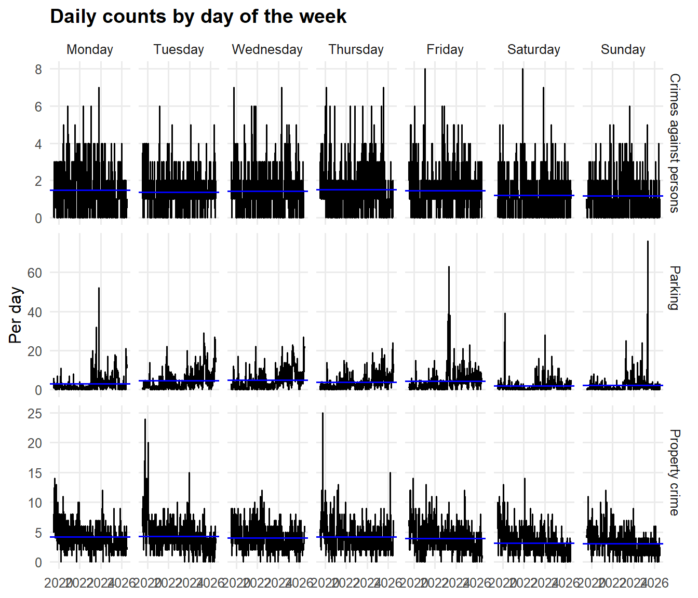
Figure 17: Daily counts grouped by day of the week, July 2019 through June 2026. Blue lines show each day’s average.
Show code
ggplot(weekday_share, aes(weekday, pct /100, color = fy_label, group = fy_label)) +geom_line() +geom_point(size =1) +geom_hline(yintercept =1/7, linetype ="dashed", color ="grey50") +facet_wrap(~ series, ncol =1, scales ="free_y") +scale_y_continuous(labels = percent) +labs(title ="Day of the week, by fiscal year", x =NULL,y ="Share of the year", color =NULL) + theme_report
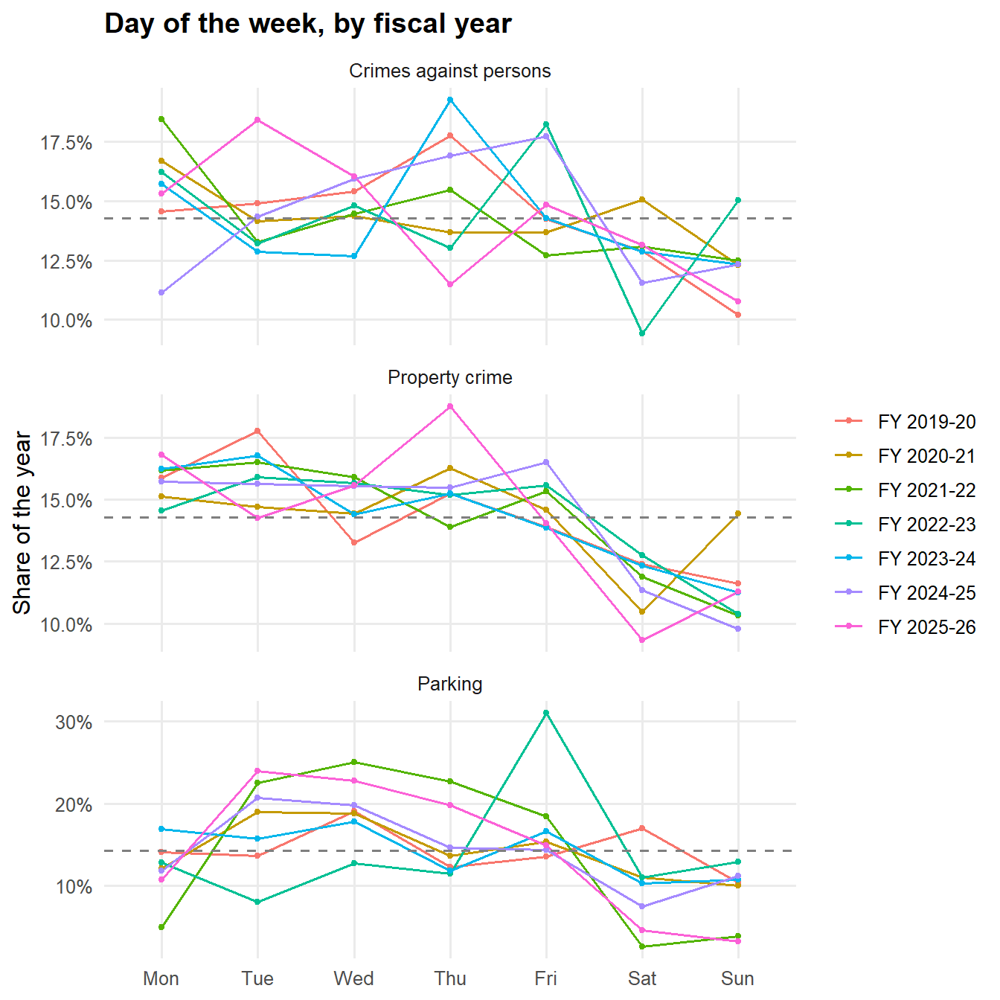
Figure 18: Share of each fiscal year’s records by day of the week. The dashed line is an even split (14.3% per day).
Table 10: Share of each fiscal year’s records by day of the week (%).
Series
Year
Mon
Tue
Wed
Thu
Fri
Sat
Sun
Crimes against persons
FY 2019-20
14.6
14.9
15.4
17.8
14.2
12.9
10.2
Crimes against persons
FY 2020-21
16.7
14.2
14.4
13.7
13.7
15.1
12.3
Crimes against persons
FY 2021-22
18.5
13.3
14.5
15.5
12.7
13.1
12.5
Crimes against persons
FY 2022-23
16.2
13.2
14.8
13.0
18.2
9.4
15.0
Crimes against persons
FY 2023-24
15.7
12.9
12.7
19.3
14.3
12.9
12.3
Crimes against persons
FY 2024-25
11.2
14.3
15.9
16.9
17.7
11.6
12.4
Crimes against persons
FY 2025-26
15.3
18.4
16.0
11.5
14.8
13.2
10.8
Property crime
FY 2019-20
15.9
17.8
13.2
15.2
13.9
12.4
11.6
Property crime
FY 2020-21
15.1
14.7
14.4
16.3
14.6
10.5
14.4
Property crime
FY 2021-22
16.2
16.5
15.9
13.9
15.3
11.9
10.3
Property crime
FY 2022-23
14.6
15.9
15.7
15.2
15.6
12.7
10.4
Property crime
FY 2023-24
16.2
16.8
14.4
15.2
13.8
12.3
11.2
Property crime
FY 2024-25
15.7
15.6
15.5
15.5
16.5
11.3
9.8
Property crime
FY 2025-26
16.8
14.2
15.6
18.8
14.0
9.3
11.3
Parking
FY 2019-20
14.1
13.7
19.1
12.3
13.5
17.0
10.4
Parking
FY 2020-21
12.1
19.0
18.9
13.6
15.4
11.0
10.0
Parking
FY 2021-22
5.0
22.5
25.0
22.7
18.4
2.5
3.8
Parking
FY 2022-23
12.8
8.1
12.7
11.5
31.0
11.0
12.9
Parking
FY 2023-24
16.9
15.7
17.8
11.8
16.7
10.3
10.7
Parking
FY 2024-25
11.8
20.7
19.8
14.7
14.4
7.5
11.2
Parking
FY 2025-26
10.7
23.9
22.8
19.8
14.9
4.6
3.2
Property crime reports are steady from year to year: each weekday takes 14% to 17% of the year’s reports and weekends 9% to 12%. Because these are reporting times, the lower weekend share may reflect when thefts are reported as much as when they occur. Crimes against persons shows no stable weekly pattern; with about 500 reports a year, shifts of three to six percentage points from one year to the next are consistent with chance. Parking follows an enforcement schedule rather than a natural pattern, and the schedule has changed from year to year. In FY 2021-22 and FY 2025-26 almost no tickets were written on weekends, while in FY 2022-23, 31% were written on Fridays.
Hour of the day
Show code
ggplot(hour_share, aes(hour, pct /100, color = fy_label, group = fy_label)) +geom_line() +facet_wrap(~ series, ncol =1, scales ="free_y") +scale_x_continuous(breaks =seq(0, 21, 3),labels =c("Midnight", "3 a.m.", "6 a.m.", "9 a.m.","Noon", "3 p.m.", "6 p.m.", "9 p.m.")) +scale_y_continuous(labels = percent) +labs(title ="Hour of the day, by fiscal year", x =NULL,y ="Share of the year", color =NULL) + theme_report
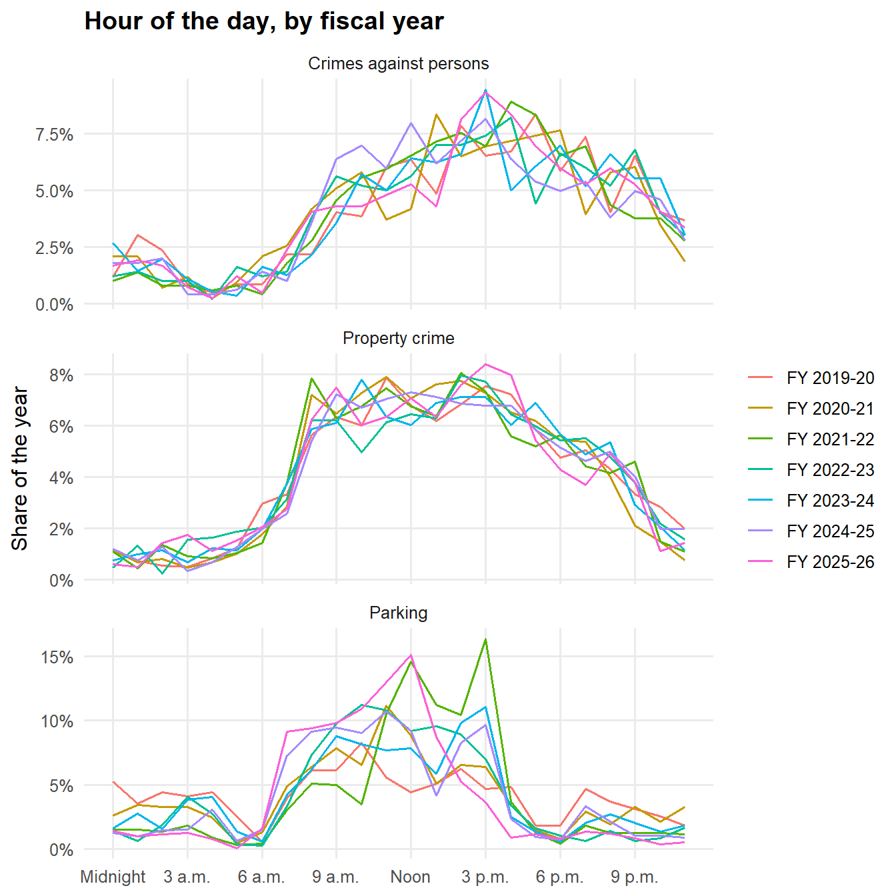
Figure 19: Share of each fiscal year’s records by hour of the day.
Table 11: Busiest and quietest hour by series and fiscal year (hour 0 = midnight to 1 a.m.).
Series
Year
Busiest hour
Busiest share (%)
Quietest hour
Quietest share (%)
Crimes against persons
FY 2019-20
17
8.4
4
0.5
Crimes against persons
FY 2020-21
13
8.4
4
0.2
Crimes against persons
FY 2021-22
16
8.9
6
0.4
Crimes against persons
FY 2022-23
16
8.2
4
0.2
Crimes against persons
FY 2023-24
15
9.5
5
0.4
Crimes against persons
FY 2024-25
15
8.2
3
0.4
Crimes against persons
FY 2025-26
15
9.3
4
0.2
Property crime
FY 2019-20
11
7.9
3
0.5
Property crime
FY 2020-21
11
7.9
3
0.5
Property crime
FY 2021-22
14
8.1
1
0.5
Property crime
FY 2022-23
14
7.9
2
0.2
Property crime
FY 2023-24
10
7.8
3
0.7
Property crime
FY 2024-25
12
7.3
3
0.3
Property crime
FY 2025-26
15
8.4
1
0.5
Parking
FY 2019-20
10
8.3
6
0.6
Parking
FY 2020-21
11
11.1
5
0.5
Parking
FY 2021-22
15
16.3
5
0.3
Parking
FY 2022-23
10
11.2
6
0.3
Parking
FY 2023-24
15
11.1
6
0.6
Parking
FY 2024-25
11
10.7
5
0.6
Parking
FY 2025-26
12
15.1
5
0.1
Crimes against persons are least often reported around 4 a.m. and most often in the mid to late afternoon, and the curves for all seven years lie nearly on top of one another. Property crime reports rise sharply at 8 a.m. and stay high until about 4 p.m.; because these are the times reports were made, this likely reflects when people discover and report thefts rather than when thefts occur. Parking tickets follow a daytime work schedule, concentrated between 7 a.m. and 4 p.m. In FY 2019-20 a noticeable share of tickets was written overnight; in recent years almost none are.
Observations on the data
The following observations may be useful to the department’s records management. They are offered as practical notes from working with the data closely, and several also affected how this analysis had to be done.
The Excel export was a substantial improvement over PDF reports. It eliminated a time-consuming extraction step and the errors that come with it, and its dates arrive as true date-and-time values. The FY 2025-26 data also corrected spelling errors in call-type names that appeared in earlier records, such as “VEHCILE PARTS THEFT.”
Some locations are recorded in forms that mapping software cannot place. These include shorthand such as “SPA/BRIGHTON” for San Pablo Avenue at Brighton Avenue, typographical variants such as “JACK N BOX & CUJTTING,” and named places without a street address, such as “HARDING PARK” and “ECPD.” About 2.5% of FY 2025-26 records could not be placed on a map. Most of these were recorded in forms like those above; the rest were genuine locations outside El Cerrito. Recording a street address or a full intersection would make these records usable for location analysis.
The Ohlone Greenway is recorded under several names, including “BART PATH” in earlier years and “OHLONE GREENWAY” and “OHLONE TRL” more recently, and 99 FY 2025-26 records name the greenway without a cross street. A standard name, together with the nearest cross street, would make greenway activity easier to measure over time.
The time of first officer arrival is missing for 19.9% of FY 2025-26 records. In the earlier records, a few show response times that are not possible, such as a first arrival recorded before the call was received, or one of more than two days. Both limit response-time analysis.
In the FY 2025-26 export, addresses for sensitive call types are generally shown at the block level rather than removed, which preserves their value for neighborhood-level analysis. A small number of records in these categories appear with full addresses, which may be worth reviewing.
Technical appendix: data processing and quality control
This section describes how the data were processed. Every step is implemented in a single R script with explicit verification checks; each check prints a result, and the expected and actual values are recorded in the code. The code for every chart on this page can be shown with the “Show code” buttons.
Sources and structure
The records through June 2025 came from 13 half-year PDF reports, which begin in January 2019, extracted to seven spreadsheets. Two extraction defects were found and corrected: some addresses were truncated where they wrapped across a line in the PDF, and the first one or two rows on nearly every page were initially dropped. Both were caught by extracting the data a second, independent way, comparing the two versions with each other and with the raw PDF text, and checking all 13 files. Combining the files produced 137,570 rows. Removing blank rows and duplicate records, most of them at the boundaries between files, left 137,194 records with unique event numbers. Line breaks inside address fields, left by the PDF extraction, were removed. Records from January through June 2019 were used in the data checks described here but are outside the report’s fiscal-year period.
The FY 2025-26 export contained 23,118 records in the same six columns. Integrity checks confirmed no duplicate event numbers, no records overlapping the earlier period, and no missing values except in the first-arrival time.
Harmonizing the two sources
Several differences between the sources had to be reconciled before the periods could be compared.
Dates in the earlier data were text recorded to the minute; the new export has true date-times with seconds. The new times were rounded down to the minute so that response times are measured the same way in both periods.
Call types are matched by exact text, so a renamed category would silently drop out of any analysis. A comparison of every call-type name across the two periods found three new names. One was the corrected spelling “VEHICLE PARTS THEFT,” which was mapped to its earlier misspelled form so that both periods are counted; the other two were new non-crime categories.
Location text also changed format. The new export records addresses in a long form such as “SAN PABLO AVE & POTRERO AVE, SAN PABLO AVE & POTRERO AVE (SPA & POTRERO), EL CERRITO, CA, 94530.” Each address was reduced to its street portion and the city was re-attached; unincorporated county addresses were given their ZIP code instead of a city; and department shorthand was expanded using the same rules applied to the PDF records. This reduced 7,234 distinct address strings to 5,185 to be geocoded.
Addresses for sensitive call types were blank in the earlier data but block-level in the new export. The 17 call types that were 90% or more blank in the earlier data are excluded from the landmark comparisons in both periods so that the two are measured on the same basis. They remain in all counts that do not use location.
Geocoding
Addresses were converted to coordinates with the ArcGIS geocoder through the tidygeocoder R package. An initial geocoding pass showed that the geocoder’s confidence score indicates only that it found a text match, not that the match is correct: without constraints, “SAN PABLO/PANAMA” matched the country of Panama and “CREEKSIDE PARK” a park in Australia, both with perfect scores. Every request for the FY 2025-26 records was therefore restricted to a Bay Area bounding box from the start.
Geocoded locations then passed through three quality rules. First, any location more than five miles from the center of El Cerrito was excluded; the 85 records excluded this way were at genuine locations in other cities, such as Martinez and San Francisco. Second, when the geocoder cannot match an address inside the bounding box, it can return a generic local point that passes a distance test. These fallback points were identified as single coordinates shared by 20 or more different address strings, and 157 records on two such points were excluded. Third, addresses with no house number and no cross street, such as “KEARNEY ST” or “HARDING PARK,” can only be placed at an arbitrary point on a street. A review of shared coordinates found such records placed up to two miles from their actual location, so all 434 were excluded from maps. After these rules, 22,532 FY 2025-26 records (97.5%) had usable locations, compared with 96.9% in the earlier data.
Landmark checks also found that a correct, perfect-score match can still be wrong in the reference data: Korematsu Middle School’s address matched the school’s former location, and its coordinate was corrected by hand from an independent source. Madera Elementary was checked against a hand-pulled coordinate and found to be within normal variance.
The cross-street correction
About 19% of the PDF records give a location in the form “house number and street, followed by the nearest intersection,” for example “6400 CUTTING BLVD, SAN PABLO AVE & KEARNEY ST.” For most of these, the geocoder placed the record at the correct address. For 287 addresses covering 1,493 records, it placed the record at the intersection instead. The most affected location was Del Norte BART, where 95% of station records had been placed about 3,400 feet from the station.
Landmark
All activity, before correction
After correction
Crime-related, before
After
Del Norte BART
557
953
194
259
Community Center
1,802
1,841
381
386
El Cerrito High School
1,235
1,248
324
329
Library
1,029
989
296
290
These counts cover all of the PDF records, January 2019 through June 2025. The problem was found by comparing, for every house address that appears in both periods, the earlier coordinate with the new one. Of 16,170 matched records, the median difference was zero, but 9.2% differed by more than 500 feet. The differences were concentrated: 287 addresses accounted for all of them, and the top 10 accounted for 43%. The newer coordinates were validated against verified landmark coordinates for every address near a landmark, and against a Google Maps check for the largest remaining address, where the new coordinate was 54 feet from the actual location and the old one 1,015 feet. The comparison was limited to El Cerrito addresses, because an initial version that did not apply this limit matched a Pinole address to a street of the same name in El Cerrito. About 10,000 records in this address form have no counterpart in the new data and could not be checked; in the matched sample, 91% were within 500 feet.
Categories and fiscal years
All 144 call types were assigned to the seven reader categories and to subcategories. Checks confirmed that every call type in both periods has exactly one assignment and that the mapping contains no unused entries. The maps and landmark tables in the section on where activity happens use a separate 52-type list of crime-related calls. It excludes administrative activity such as security checks and traffic stops, and financial crimes such as identity theft, which are usually logged at the victim’s home rather than where a crime occurred. It includes some non-crime activity, most notably parking violations. One type is spelled differently in the two sources (“VEHCILE PARTS THEFT” and “VEHICLE PARTS THEFT”); both spellings are counted.
Seasonal analysis
Monthly series were built as tsibble objects with gaps filled as zeros, and each was confirmed to contain all 84 months from July 2019 through June 2026. Seasonal and trend strength were measured with STL decomposition (feasts::feat_stl), and peak and low months were read directly from the seasonal component. Year-to-year comparisons of weekday and hourly patterns use each year’s percentage distribution, so that years with different volumes can be compared on shape. A check for placeholder timestamps found only 0.02% of records at exactly midnight, well within normal.
Limitations
Records reflect what was reported and logged, not verified events. Changes in reporting behavior, recording practice, or data format can affect counts. Categories are the analyst’s assignments. Locations are approximate, some records could not be mapped, and the “next to the greenway” measure captures only records where the greenway was noted as a cross street. Times are when calls were received, not when incidents occurred. Several subcategories have small annual counts, where year-to-year changes may reflect chance.
Tools
R 4.x with tidyverse, readxl, tidygeocoder, geosphere, sf, ggspatial, ggrepel, and fpp3 (tsibble, feasts, fable). The pipeline script contains every processing step and verification check described here.